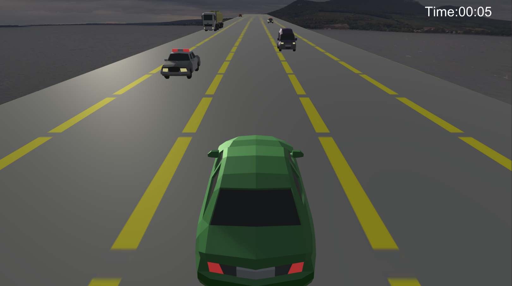
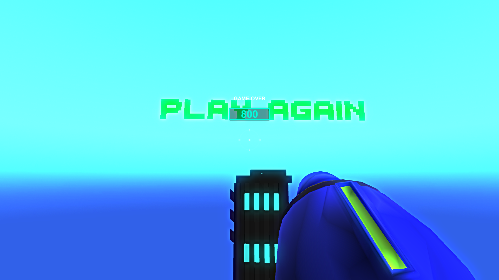

Autorama

Autorama is a project developed for MI 231. It is an inifinite-runner style game where the player takes
control of a green car racing down a highway, dodging other cars while trying to last as long as possible
without getting hit. The game feature several types of cars to avoid each with their own behaviors and
properties. This project was developed alongside a partner, where I completed the majority of the programming
work.
Box Shooter

Box Shooter is a project developed for CAS 117. It is an arcade-style first-person shooter that features
multiple levels themed after famous video games. Each level has its' own layout and gimmicks. The goals is for
the player to shoot as many targets as possible to score points before the timer runs out. The player must avoid
shooting bad targets that make them lose points and must hunt for powerups that grant them more time. This game
was developed by me aloneand many of the assets were created by me from scratch.